"I had no idea that's where I got the double jump from. … I thought I already had it, and it was just telling me to use it as an extra thing here."
"It took like maybe 30 seconds to finish the whole gate, and like I don't even know if I got XP from it. Like, what was the point of that gate?"
"AAA level would be … the big title, and it says you just unlocked double jump. Press space in the air again to use it. … And maybe every time you unlock a major thing in the game, it actually shows you that as well."
You take each move at a stand. The game names it in its biggest type. The hall after it can't be crossed without it. Then you are paid where you can see it.
This is your own play on 11 November, read from the game's log. The leap was given while you were sprinting off a wall-run. One second later the pit threw you back. It did that three times before you crossed. You then needed the move once, and the gate was over.
The same thing on today's build, in first person, taken by a tour on GitHub's machines that ran the edge the way you did:
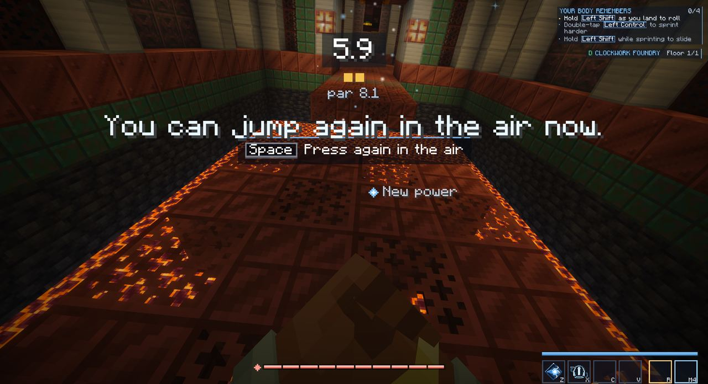
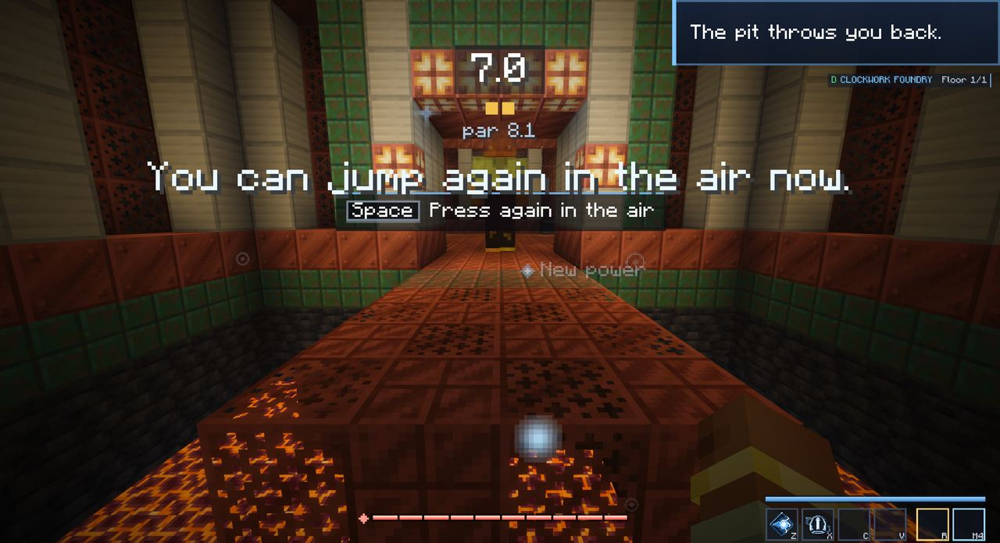
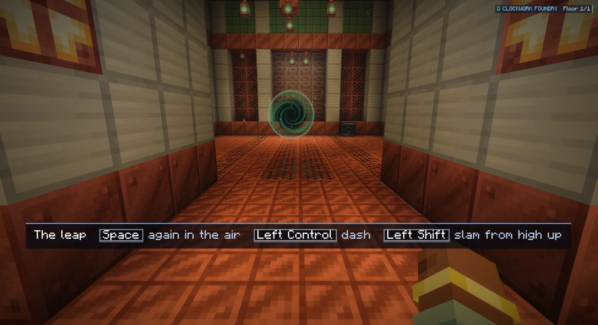
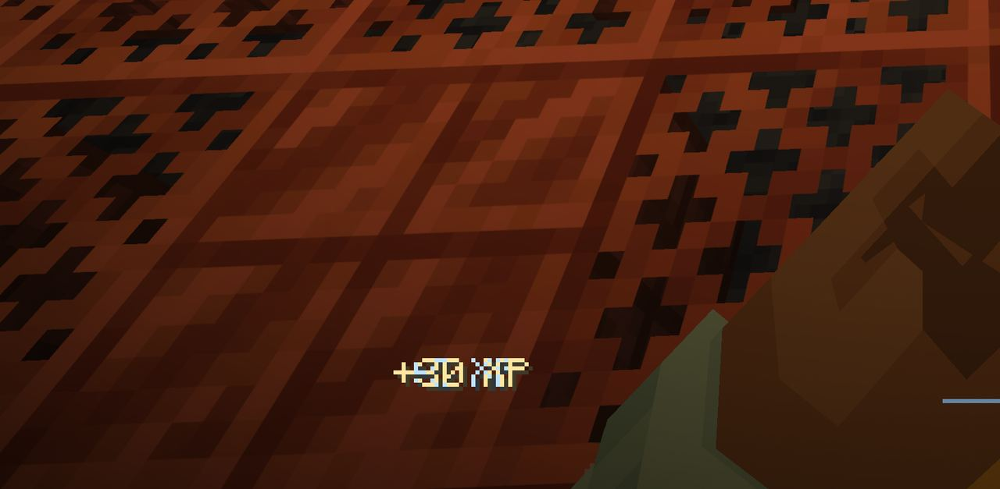
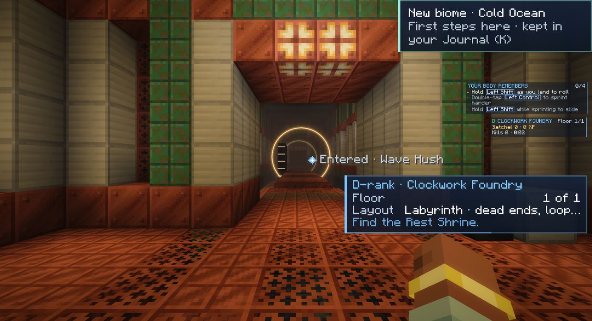
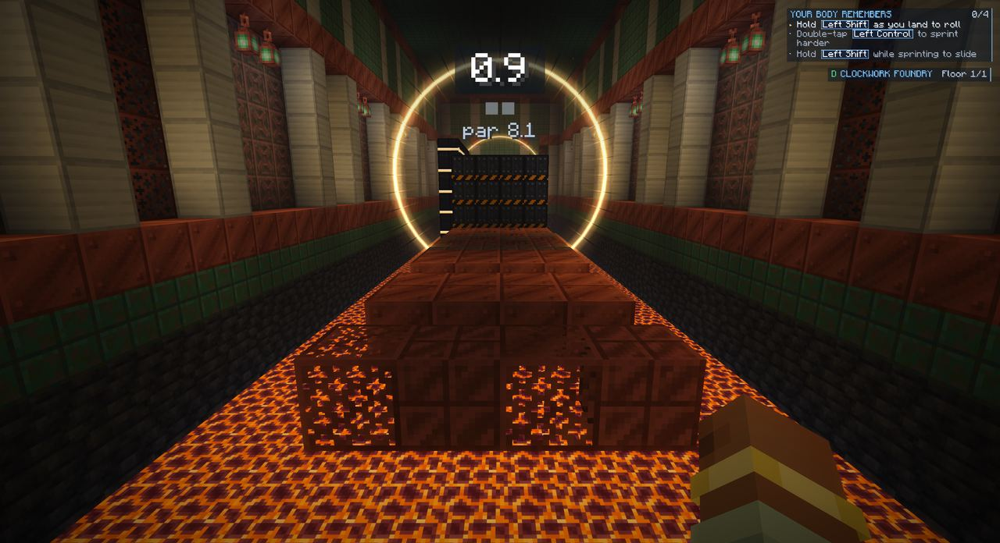
| You said | What causes it | Where I saw it |
|---|---|---|
| "I had no idea that's where I got it" | It is given on a row you sprint across, a second before the pit. | Your log; the first two pictures |
| "I thought I already had it" | The words are a tip's. Nothing says unlocked. | The title: "You can jump again in the air now." |
| "I had to use it one single time" | 26 of the course's 31 rows are moves you had. One chasm needs the leap. | The course's code |
| "30 seconds … what was the point" | Par is 8.1 seconds, and the door never says why to go in. | The clock; the gate's card |
| "I don't even know if I got XP" | You got a fifth of a level. It shows as small text for a moment. | The fourth picture |
This is what you asked for. It is built like the discovery title the game already has, one size up, in gold: a spaced label, a line of light opening from the middle, the name, and how to use it with your own key. It shows for six seconds. While it shows, nothing else is drawn: no clock, no toasts, no tips. It can only start while you are standing still, so you can't be falling when it arrives.
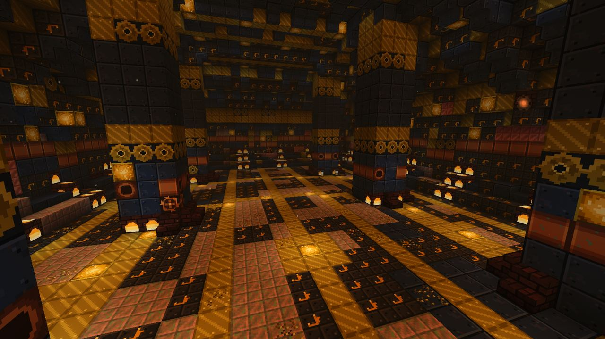
Mock-up. The room is a real picture of the Stopped Works. The words and their sizes are the proposal.
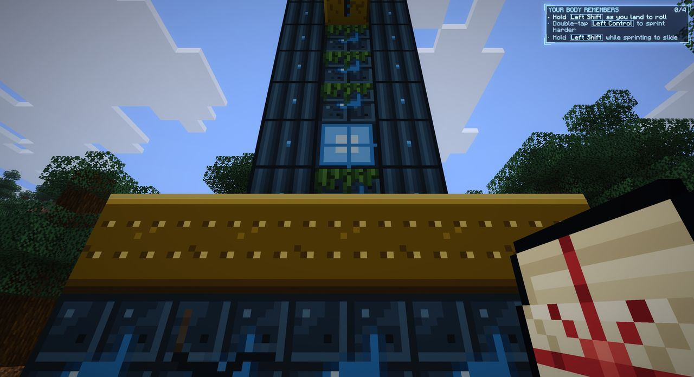
Where the rope is given.
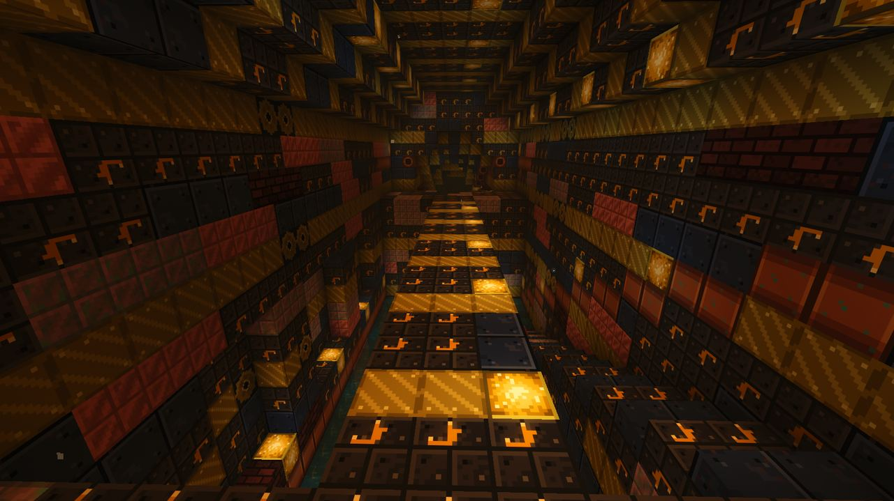
At the Gauntlet's second stand.
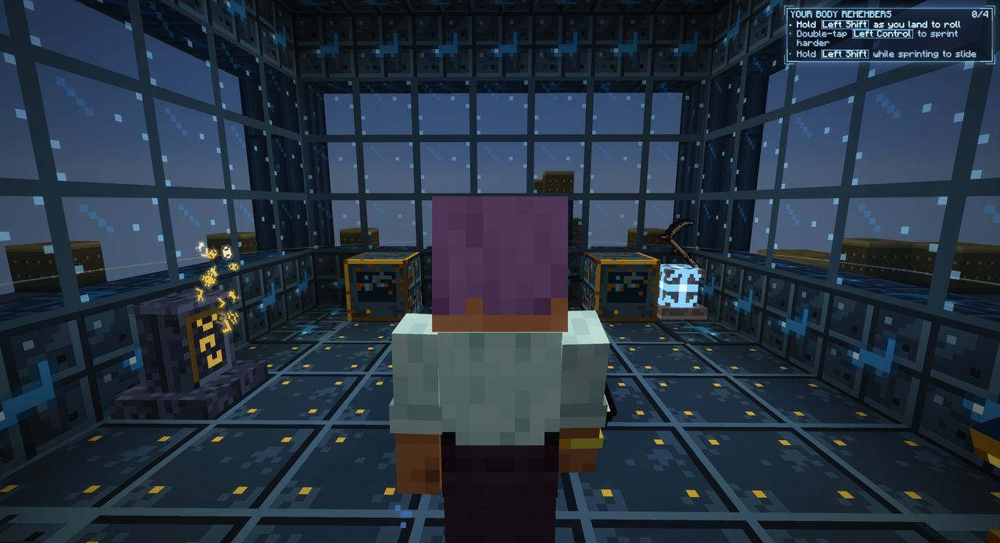
At a sky platform's core.
If everything gets this title, nothing does. I would keep it for four kinds of thing, and leave the rest as the small messages they are now.
| Gets the title | Examples | Today |
|---|---|---|
| A new way to move | Rope, Double Jump, Air Dash, Slam, Wings, Flight, the Sovereign's Form | A sentence each |
| A new power | Haymaker, Shockwave | A small "New power" message |
| A new rank | D-rank | A small message |
| A new layer of the world | "Stratum 3 · The Drowned Choir" | A small message. On your D-rank day the log shows it waited 45 seconds behind other messages and was then filed away unseen. |
The vault's rope worked for you because it is a place you stand in and it does something to you. The Gauntlet's moves should arrive the same way. Each one waits on a stand. You hold Use for a second to take it. Before the first stand you meet a gulf you can't cross and watch a figure of light cross it, so you want the move before you have it. You said the same about wings: put them in a glass case "to make you want it".
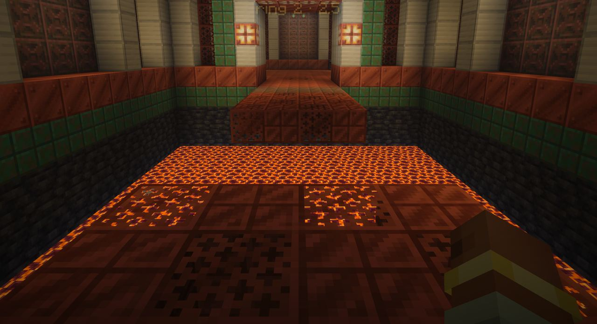
A storyboard, not a prototype: I can't run the game's own screen in a page. Frames 1 and 5 use today's hall as a stand-in for the gulf. The stand is a sketch of its shape, not its final look.
Three stands, a hall after each that needs that move, then one timed run that needs all of them, then the pay. Five to eight minutes the first time. Nothing before the timed run has a clock or can hurt you.
| Hall | What it makes you do | Uses |
|---|---|---|
| The way in | A short run of moves you have. It ends at a gulf six wide whose far side is two higher. A figure of light crosses it. You can't yet. | 0 |
| 1 · Twice after the Double Jump stand | The gulf you couldn't cross. A step three blocks up. A gap onto a high ledge. A second jump off a wall-run. | 4 |
| 2 · Through after the Air Dash stand | A gap of nine: jump, then dash. A line of presses you dash between. A corner, because the dash goes where you look. A wide gulf: jump, jump, dash. | 4 |
| 3 · Down after the Slam stand | A shaft eight deep with a cracked deck that only a slam breaks. Three constructs on a plate, thrown by a slam. A stuck hammer you free by slamming its plate. | 3 |
| 4 · The Long Run | One course on three levels. The clock starts on your first step. Rings are checkpoints. Medals against par, about 85 seconds. Any finish counts. | 14 |
| 5 · The tally | The pay, the plate with your time, the way out. |
Each hall follows the same four beats: a safe first use, a harder one, one that mixes in a move you already had, then on. Today's course asks for the leap once. This one asks 11 times before the test and 14 times in it.
The aimed dive you asked the rope session for gets a fourth stand and a short hall of its own when it exists. Until then the Gauntlet is whole without it.
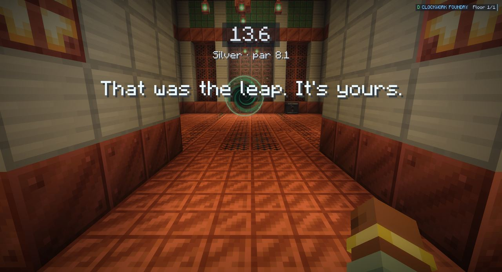
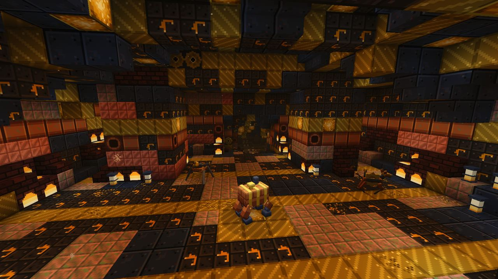
Mock-up. The numbers are examples.
The game already has one pay that works: after a Lord falls, a number climbs in the middle of your view with a bell for each step. The Gauntlet's end would use the same count. Then the mastery bar fills from where it was. Then your time and medal are struck onto a plate, with how many times you used each move.
I would also raise the first run's XP from a fifth of a level to half a level, and keep the gate standing afterwards so you can run it again for a better medal. Both are your call below.
| Where | Today | Proposed |
|---|---|---|
| The gate opens | "A gate has opened for you. It stands in front of you. It is a course, not a fight." | "A gate has opened for you. It's the Leaper's Gauntlet. It holds a new way to move. No fighting." |
| Its card | "A course of the Foundry, and at its end a chasm no running jump will cross." | "A works that stopped mid-stroke. What it made is still on its stands. About six minutes. No fighting." |
| Tasks | "Run the gate that opened where you climbed" (even when it opened in front of you) | "Run the Leaper's Gauntlet" · "It holds a new way to move." |
| Arriving | "Layout Labyrinth · Find the Rest Shrine." | "Reach the first stand", then a line for the hall you are in |
| The gift | "You can jump again in the air now." | UNLOCKED · Double Jump · "Press [Space] again in the air" |
| A fall | "The pit throws you back." as a critical toast, every time | No words. The throw and its sound say it. Never over an unlock. |
| The end | "That was the leap. It's yours." | The tally, then "The Gauntlet is yours to run again." |
The door now says what kind of thing is inside, a new way to move. It still never says which.
Mock-up: two stands taken, one to go.
The log would gain plain lines, so the next time you play it I can see what happened without asking: when each move was unlocked and at which stand, and at the tally, "run: 14 double jumps, 9 dashes, 4 slams, 2:31, bronze, eased 1".
Keep today's hall. Stop you before the chasm, show the unlock title, hold the pit's toast, add two more chasms, count out the pay.
About half a day. You would know where it came from. The dash and the slam would still never be needed, and it would still be about 90 seconds.
Three stands, a hall each, one timed run, a counted pay, in the look of the Stopped Works.
The only one that answers all four of your points. The course is new and needs the gates session.
No gate. You take the leap on a Tether Spire's crown, and the course is the spire and its yard, out in the world.
The best fit to "the way out of the place is the move". It means rebuilding every spire and gives up the gates' pit, rings and medals. Not now.
Two things from outside the game shaped B. Nintendo's 3D Mario levels teach one idea in four beats (introduce it safely, develop it, twist it, conclude) in about five minutes (Engadget on Koichi Hayashida's level design, 2015). And in the Zelda games a dungeon's item changes how the rest of the dungeon reads, while a dungeon you can finish without its item makes the item feel optional (Mark Brown's Boss Keys on Link's Awakening). Both are other people's analyses, not the makers' own documents.
| Piece | Who | Hours |
|---|---|---|
| The unlock title, and the ladder's seven titles | This session | 3 to 4 |
| The stand and its scene, one move at a time, the lessons for the dash and the slam, the words, Tasks and K rows | This session | 4 to 6 |
| The figure of light drawn as light (today it draws as a solid copy of your skin; the open item from the last page) | This session | 3 to 4 |
| Letting the leap's moves be switched on one at a time; the aimed dive; the double jump that mantles | The rope session (it owns those files) | 1 to 2 for the switch |
| The place, the halls, the Long Run, its check, the tally floor, the door's card and lines, running it again | The gates session | About one built land's work, by its own estimate |
| A new power, a new rank and a new layer of the world using the title | Their own sessions, a line each | under 1 each |
The unlock title needs nothing else, so it lands first and works on all five rungs of the ladder. The stands and the course land together. Today's course stays in the code until the new one's own check passes. Checks are tours on GitHub from the same camera as the pictures above, then your play.
It answered after this page first went up. In short: build the Gauntlet as a place laid by hand in the Stopped Works' kit, the way the Hour Crypt was built, and leave the old hall behind.
| The plan asks for | Its answer |
|---|---|
| A place in the Stopped Works' look, as long and as tall as it needs | Yes. The depth, air, light and sound come with the kit. |
| A high step, a long gap, a deep shaft, small targets far below | Easy. They are shapes. |
| Stands you stop at, doors that open on a move, no clock and no pit in the halls that teach | Yes to all three. |
| Constructs to throw with a slam | Easy. The Foundry's own, standing asleep. |
| Staying open to run again | Easy. |
| A deck or a plate that only a slam breaks | Medium. It needs one call from my side when a slam lands. |
| The clock, rings and medals for the Long Run | Medium. They exist in the old course and have to be moved over. |
| A gate that opens onto this one place, for you | Small, and new. |
It flagged two things. A fall in its kit costs a little health today, so "nothing hurts in the halls" is a change it would make for this gate. And nothing in the kit carries a player, so there are no moving platforms; the plan uses none. It also found why presses seemed to appear in front of you in this run: a press was not drawn while it was up. It has fixed that on its own branch.
Yes or no on each, with a note if you want something changed. Your answers save as you click.